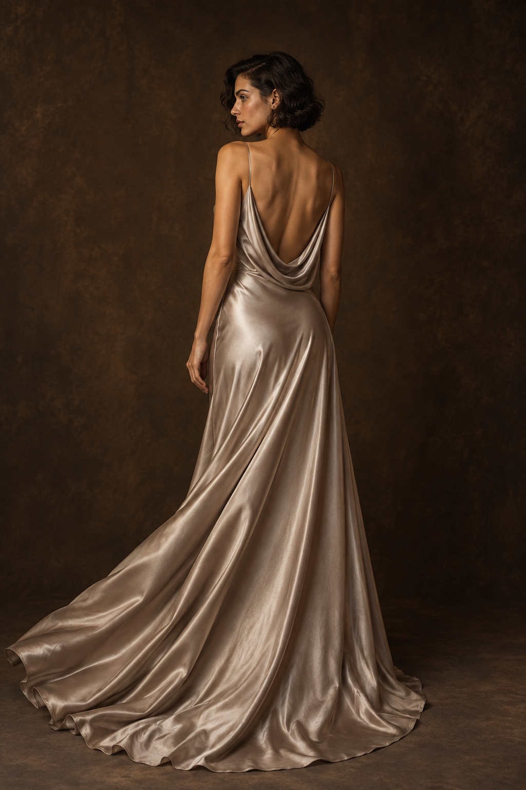
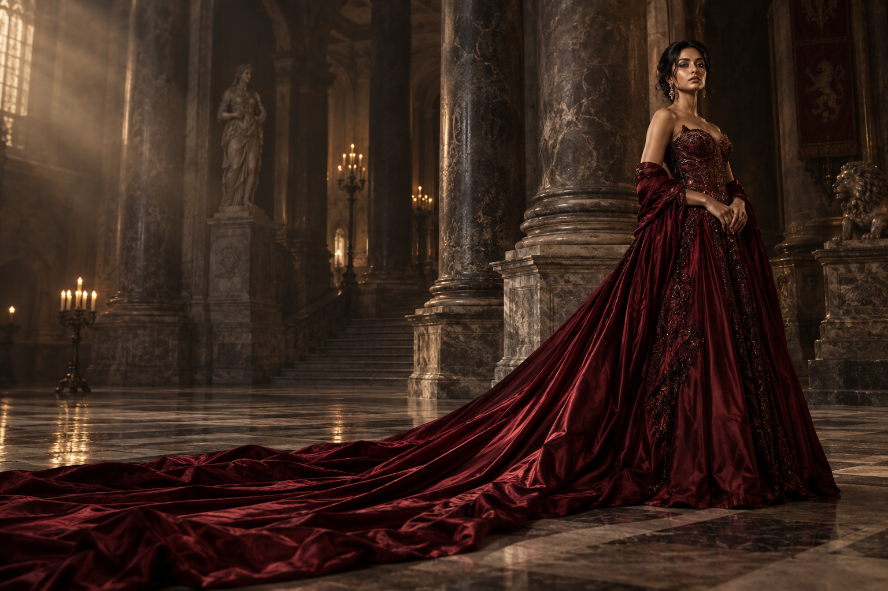

THE SHAPE OF A MEMORY — COLLECTION 01
Designedto beremembered.
An expression only you can wear.
Explore the collection ↗BEFORE IT BECOMES A MEMORY
First, a gesture.
Then, a silhouette.
There is a moment when fabric becomes feeling.
We design for that moment.
02 — THE COLLECTION
Signature couture.
Four expressions.
An unmistakable presence.
A STUDY IN INDIVIDUALITYBehind the silhouette ↓

STUDY 01 / TEXTURE & LIGHT03 — INSIDE THE ATELIER
Some details
are felt
before they
are seen.
The curve of a seam. The fall of a sleeve. The way a thousand small details become a single feeling.
Our world begins with the quiet conversation between form, fabric, and the person who brings it to life.
Meet your next chapter ↗
04 — THE ENTRANCE
Fashion isn’t worn.
It’s expressed.
For the moment that becomes your memory.
05 — AN INVITATION
The next chapter
is yours.
A personal expression begins with a conversation.
Rediscover the collection